Materials de pedra¶
Són els materials que provenen de les pedres o les sorres de la natura.
Índex de contingut:
Propietats de pestori¶
- ** Propietats mecàniques de la pedra **
- Són materials durs, relativament fràgils i amb una resistència mecànica suficient per ser molt pràctica en la construcció d’edificis i altres estructures similars.
- ** Densitat **
En general, és superior a l’aigua i varia des d’1,5 kg/litre de la sorra fins a 2,8 kg/litre de la pissarra, el marbre o el granit.
La pumice o la pedra diatomita són excepcions amb una densitat molt baixa, inferior a la de l’aigua, sent molt porosa.
- ** Resposta a la llum **
La majoria de materials de pedra són opacs i tenen una bona resistència a la radiació del Sol.
Alguns cargols de pedra com el vidre que s’utilitzen a les finestres, el quars o el safir que s’utilitzen en esferes de rellotges són molt transparents.
Altres pelades pedregoses són la porcellana són translúcides.
- ** Propietats de fabricació de pestori **
La pedra natural no és maleable ni dúctil ni es fonen fàcilment. Es poden tallar i polir per produir fulls i blocs.
Els barmers com el ciment són líquids quan es barregen amb aigua i es poden modelar fàcilment abans d’endurir -se.
Els materials ceràmics tenen una consistència de pasta molt maleable, però no molt dúctil. Es poden modelar fàcilment abans de cuinar.
El vidre es pot fondre fàcilment i actua com un material de plàstic molt maleable i molt dúctil mentre està calent. Pot formar fils molt fins que serveixen de reforç a altres materials (fibra de vidre).
- ** Conductivitat de pestori **
- Els materials del ventre tenen molt poca conductivitat tèrmica i elèctrica i resisteixen bé les tensions i les temperatures altes. Per això, el vidre i la ceràmica s’utilitzen com a separadors elèctrics en línies d’alta tensió i com a material refractari als forns.
- ** Propietats químiques de la pedra **
Els Stony són molt estables i resisteixen bé als àcids i als càustics i a l’oxidació i a la radiació solar.
L’excepció d’això és la pedra calcària i les roques de marbre que són atacades per àcids i desfer -se gradualment de la pluja àcida generada per la contaminació.
- ** Propietats ecològiques de les campanes **
Els materials de pedra solen ser poc reciclables, tret del vidre que es pot reciclar moltes vegades sense pèrdua de qualitat.
No són de naturalesa tòxica, tot i que la fabricació de ciment produeix molts gasos d’efecte hivernacle. Es calcula que el 8% de totes les emissions de CO2 provenen de la seva fabricació.
L’amiant, també anomenat amiant, és altament carcinogènic, de manera que el seu ús i fabricació ha estat prohibit fa anys als països occidentals.
El granit produeix un gas radioactiu i cancerigen anomenat radó. Les zones habitades que contenen molt de granit als voltants han de tenir -ho en compte a les construccions i utilitzar bons sistemes de ventilació.
Stony Natural¶
- ** Marble **
S'ha utilitzat des de l'antiguitat per construir edificis o escultures tallades. Actualment, encara s’utilitza en la construcció per cobrir sòls o parets d’aspecte luxós.
El marbre està compost per calcàries cristal·litzades, de manera que no és resistent als àcids, que el desfeu.
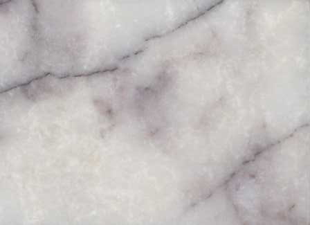
Lysippos, cc by-sa 2.0 de, via wikimedia commons.¶
- ** Granit **
S'ha utilitzat des de la prehistòria per a la construcció i és molt apreciat per la seva gran resistència a l'erosió i la corrosió.
S'ha utilitzat àmpliament com a recobriment en edificis públics i monuments. També s’utilitza en objectes quotidians com ara taulells de cuina.
Quan la pluja àcida augmenta, el granit substitueix el marbre en temps.
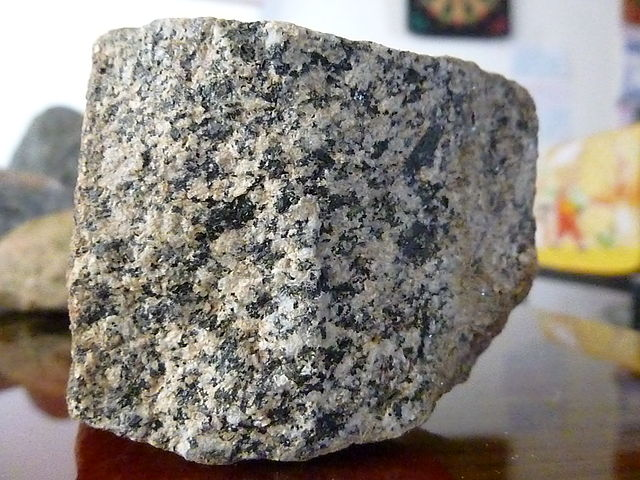
Rojinegro81, cc by-sa 3.0, via wikimedia commons.¶
- ** tauler **
Està format per lloses o fulles planes i fines que fa que sigui oportú fer que els panells plans s’utilitzin per cobrir les teulades i, antigament, per escriure amb guix.
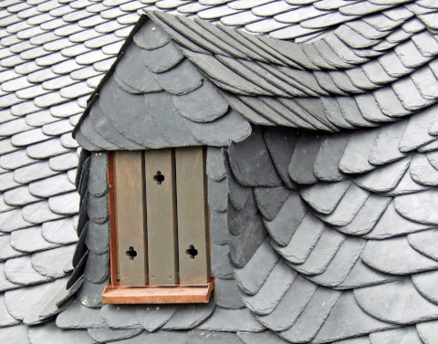
Dontwury <https://commons.wikimedia.org/wiki/file:st.leonhard-ffm002.jpg> __, cc by-sa 3.0 ` `` `` `` `` `` `` `` `` `` `` `` `` `` ``¶
- ** Calcera **
S'utilitza ja que l'antiguitat com a element de construcció. La catedral de Burgos està construïda amb pedra calcària.
En cremar -lo en un forn produeix calç, un component fonamental del ciment gris.
La pluja àcida la dissol.
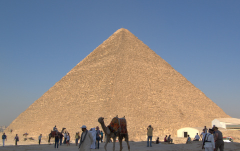
Gran piràmide de Guiza. Completament cobert de pedra calcària.¶
Berthold Werner <https://commons.wikimedia.org/wiki/file: ` `` `` `` `` ``- ** Stone Arenisca **
És la roca sedimentària més comuna. Està compost per grans de quars i altres partícules unides per un ciment natural (carbonat de calci o altres).
S'utilitza com a material de construcció i en pedres afilades.
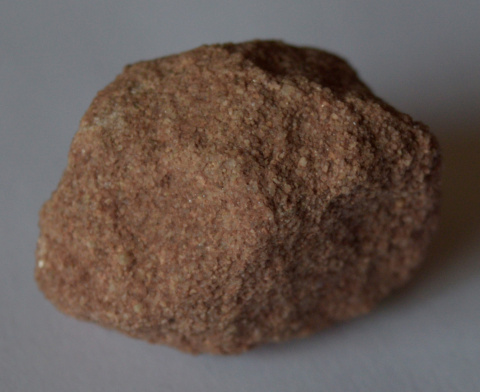
Sarranpa, cc by-sa 4.0, via wikimedia commons.¶
- ** grava i arenes **
- Són roques d’una mida petita. S'utilitzen al costat del ciment per formar formigó.
{kind=link}
Batalers¶
Són materials tècnics produïts industrialment. Es presenten en forma de pols que, barrejat amb l’aigua, produeix una pasta que es pot modelar. Poc després de barrejar -se amb l’aigua, s’endureixen i adopten una consistència de pedra.
- ** I així **
És un aglutinant blanc.
S'utilitza des de la prehistòria per unir i segellar pedres de construccions. També s'utilitza per al revestiment i la decoració de parets i sostres.
El guix de gra millor s’anomena ** guix **.
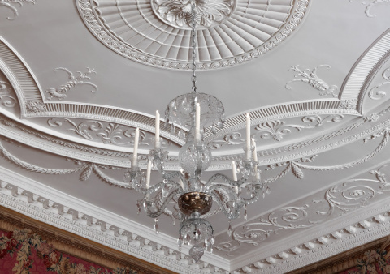
Joseph Rose <https://commons.wikimedia.org/wiki/file:tapestry_room_from_croome_court_met_dp341270.jpg> __ cc0 domini públic.¶
- ** Ciment **
Està format per calcàries i argiles calculades en un forn al qual s’afegeix guix per millorar les seves propietats. Normalment és color ** gris **.
Es calcula que la producció anual és de més de 4.000 milions de tones. El seu principal ús és la producció de formigó.
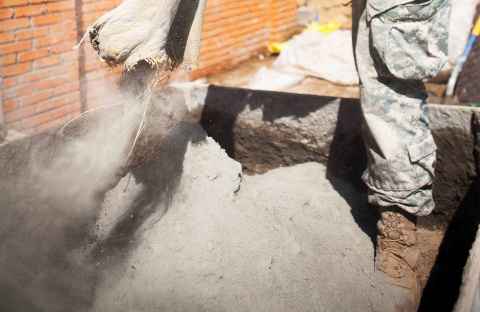
- ** Concrete **
Està format per ** ciment ** barrejat amb sorra i grava.
El formigó armat té una estructura interna de barres d’acer per millorar la seva resistència.
S'utilitza per fer pilars i terres en edificis, carreteres, ponts, preses, ports, etc.
Stony Ceràmica¶
Estan compostos per una pols fina barrejada amb aigua, amb aspecte pastós. Una vegada que el modelat es cou al forn per unir -se a les partícules fines per fusió.
- ** Clay **
És una roca sedimentària formada per grans molt fins, menys de 0,004 mm.
Va ser la primera ceràmica elaborada pels humans i encara avui és un dels materials més barats i àmpliament utilitzats.
S'utilitza per fer maons, rajoles, contenidors i per produir ciment.
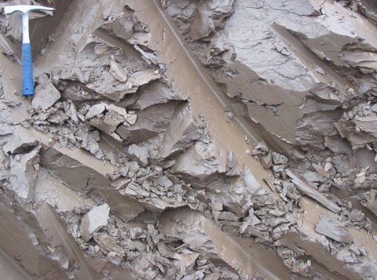
Siim Sepp, cc by-sa 3.0, via wikimedia commons.¶
- ** Crockery **
Es fabrica amb argila barrejada amb sorra. És un material porós com l’argila, de manera que se sol cobrir amb un vernís extern, el vidre, que es cristal·litza en la cuina fent la peça impermeable.
S'utilitza per fer plats.
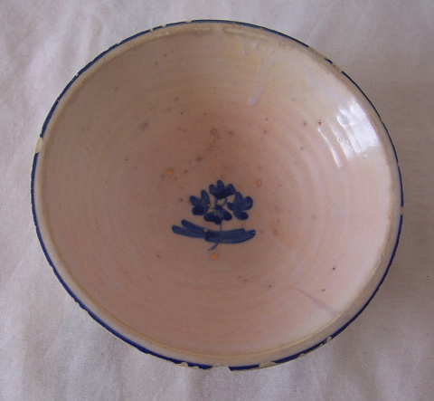
Lourdes Cardinal <https://commons.wikimedia.org/wiki/file:cuenco_barro_ceramica_popular_lou.jpg> __, cc by-sa 3.0 <https://creativecommns.org/licenses/by-sa/3.0/deed.en> `` `` `` `` `` `` `` `` ` `` `` `` `` `` Wikimedia Commons.¶
- ** CONEWARE **
És una barreja d’argila amb materials com la sílice que proporcionen una major resistència mecànica i cuina (pertorbacions).
És un material molt dur i impermeable. S'utilitza principalment en la fabricació de rajoles del sòl.
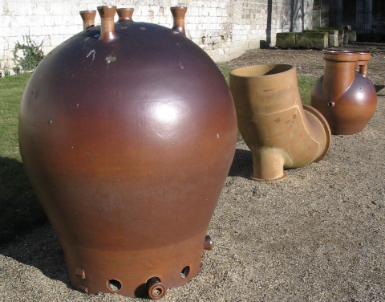
Conjunts utilitzats en la indústria química.¶
Patrick Charpiat <https://commons.wikimedia.org/wiki/file:beau_021.jpg> __, cc by-sa 3.0 <https://creativecommons.org/licenses/by-sa/3.0/deed.en> __, via wikimedia commons.- ** Porellana **
És un material ceràmic generalment blanc, dur, impermeable, translúcid, molt resistent a la corrosió, el xoc tèrmic i el mal conductor de l’electricitat.
Format per pols de caolina, quars i feldspat és el material ceràmic més prim i similar al vidre.
S'utilitza per fer plats, gerros, aïllants elèctrics, lavabos, lavabos, etc.
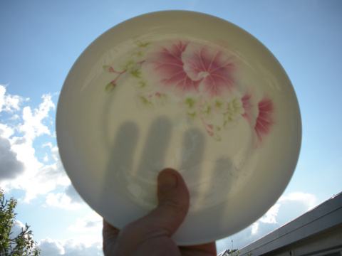
Klausbo <https://commons.wikimedia.org/wiki/file:transpare_porcelain.jpg> __ domini públic.¶
Vidre¶
És un material que s’obté fonent la sorra de sílice, la pedra calcària i el carbonat de sodi.
S'utilitza per fabricar plats, ampolles, finestres, parabrisa, miralls, lents, material de laboratori, etc.
Amb fibres de vidre, es poden reforçar altres materials (plaques de guix, resines de plàstic, etc.) per adquirir una major resistència mecànica.
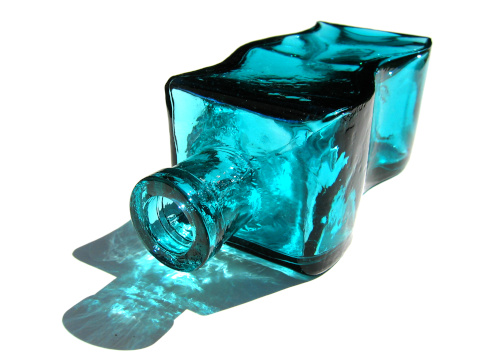
Matthew Bowden. <https://commons.wikimedia.org/wiki/file:colorful_bottle.jpg>`__ cc by-sa 3.0 <https://creativecommons.org/licenses/by-s/3.0/deed.en>`__, a través de Wikimedia Commons.¶
Qüestionaris¶
Test qüestionaris sobre materials de pedra.